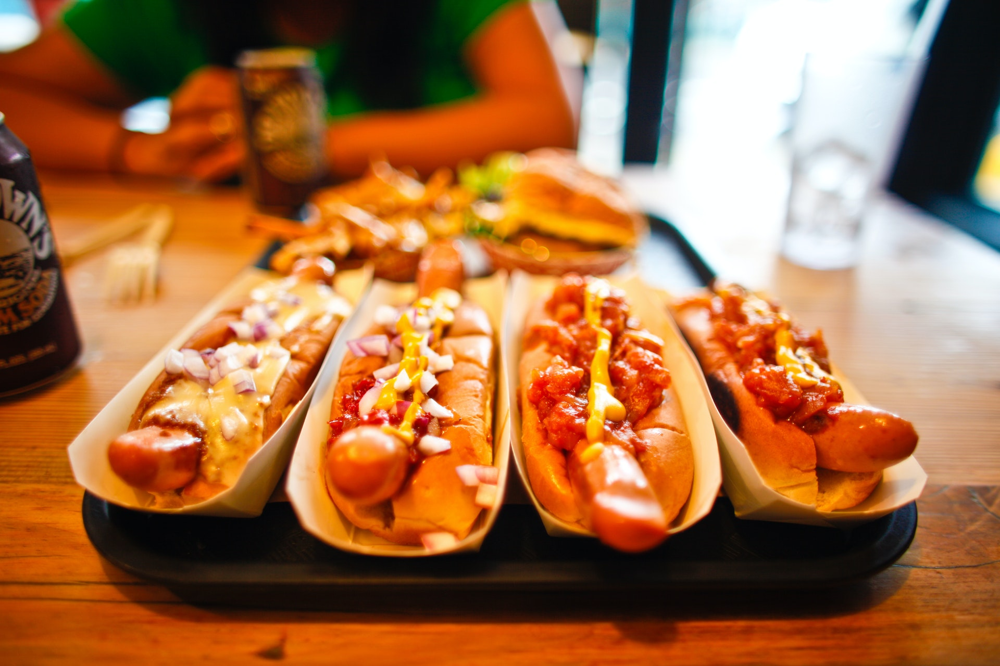

Recipe of hot dog

Why hot dog?
Hot dogs are highly customizable.
You can choose from a variety of sausage types, such as pork, chicken,
or vegetarian,
and add a wide range of condiments and toppings, such as mustard, ketchup,
onions, pickles, sauerkraut, cheese, and more.
Ingredients
-
Hot dog buns: Soft and slightly toasted buns specifically made for hot
dogs.
-
Hot dog sausages: Choose your preferred type, such as beef, pork,
chicken, turkey, or vegetarian sausages.
-
Condiments:
- Mustard: Classic yellow mustard or Dijon mustard.
- Ketchup: Tomato-based sauce.
- Relish: Pickled cucumber relish.
- Mayonnaise: Creamy dressing.
- Sauerkraut: Fermented cabbage.
- Onions: Chopped or caramelized onions.
- Pickles: Sliced dill or sweet pickles.
- Jalapeños: Sliced spicy peppers (optional).
-
Toppings:
- Cheese: Shredded cheddar, American cheese, or cheese slices.
- Bacon: Crispy cooked bacon strips (optional).
- Lettuce: Fresh and crisp lettuce leaves.
- Avocado: Sliced or mashed avocado.
- Salsa: Spicy tomato-based sauce.
- Chili: Meaty or vegetarian chili.
- Coleslaw: Creamy cabbage and carrot salad.
- Fried onions: Thinly sliced onions sautéed until crispy.
- Tomatoes: Sliced tomatoes.
- Salt and pepper: Seasoning for taste.
Steps
- Heat a grill, stovetop, or microwave.
-
Cook the hot dog sausages until they are heated through and slightly
browned.
- Toast the hot dog buns until they are lightly crispy.
- Place the cooked hot dog sausage inside the bun.
-
Add your desired condiments, such as mustard, ketchup, relish, onions,
or any other preferred toppings.
- Season with salt and pepper to taste.
- Serve the hot dog immediately and enjoy!
Back to home